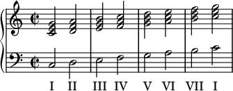

Az első fok neve a tonika, a negyedik foké szubdomináns, valamint az ötödik fok elnevezése: domináns. A nyolcadik fok ismét a tonika nevet viseli.
A hangközök elnevezése abból a latin sorszámnévből származik, ahány hangot a hangköz felölel az ún. diatonikus skálán (dó, ré, mi, fá, szó, lá, ti), az első hangot is beleszámítva. A dó–fá hangköz tehát egy kvart, hiszen a dó–ré–mi–fá sorban a fá a negyedik hang. A hangok abszolút távolsága ettől a számtól eltér, hiszen itt a kezdőhangot nem számítjuk bele (nulla távolságra van önmagától), illetve figyelembe vesszük azt is, hogy a mi–fá és ti–dó nem egy egész, csupán egy félhang távolságra van egymástól. Ily módon a tiszta kvart pusztán 2 egész és egy félhang abszolút távolságot jelent, hiszen a dó–ré, ill. ré–mi egy-egy egész hang távolságot, a mi–fá pedig csak egy félhang távolságot jelent.
Az alábbiakban a hangközök abszolút távolságát adjuk meg, utalva a latin sorszámnévre, ami a diatonikus skálán értelmezhető.